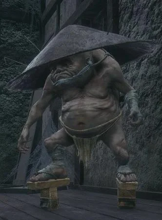

O Rato do Rio é um segredo oculto dentro do jogo que faz parte de uma missão secundária. Ao seguir pistas e interagir com certos personagens, o jogador pode acessar uma área secreta que revela mais sobre a história do jogo.
A missão exige que você encontre três locais específicos no jogo. Depois de interagir com esses locais, você desbloqueará um mini-boss escondido e uma recompensa valiosa.
O Segredo de Mibu pode ser encontrado nas profundezas do Vale Submerso. Ao seguir um caminho alternativo, você encontrará uma entrada secreta que leva até a Água Mibu, onde um chefão opcional espera.
Derrotar esse chefão traz uma recompensa única, além de desbloquear novas interações com os NPCs da região.

Dentro do Hirata Estate, existe um caminho secreto que pode ser acessado apenas após uma série de interações com NPCs específicos. Esse caminho leva a uma área alternativa, onde você pode coletar itens raros e enfrentar inimigos poderosos.
Para ativá-lo, você precisa interagir com uma certa árvore e seguir os sinais espalhados pela área. Esse segredo é fácil de perder, mas oferece ótimas recompensas.

A Máscara de Tengu é um item raro que pode ser encontrado em um dos cantos mais afastados do jogo. Para desbloqueá-la, você precisa vencer um mini-boss escondido, o qual pode ser acessado ao seguir uma rota alternativa em Ashina Castle.
Depois de conseguir a máscara, ela oferece uma habilidade especial que pode ser usada em certos tipos de combate.

O Portal de Senpou é um segredo relacionado a um dos templos mais misteriosos do jogo. Ao interagir com um artefato específico em Senpou Temple, você abrirá uma porta secreta que leva a uma região subterrânea cheia de enigmas e novos desafios.
Dentro dessa área, você encontrará mais itens e um chefão opcional com habilidades únicas. Esse segredo é difícil de encontrar, mas oferece uma das experiências mais recompensadoras do jogo.
Desenvolvido Por - Kaio Ferreira RA: 5160517